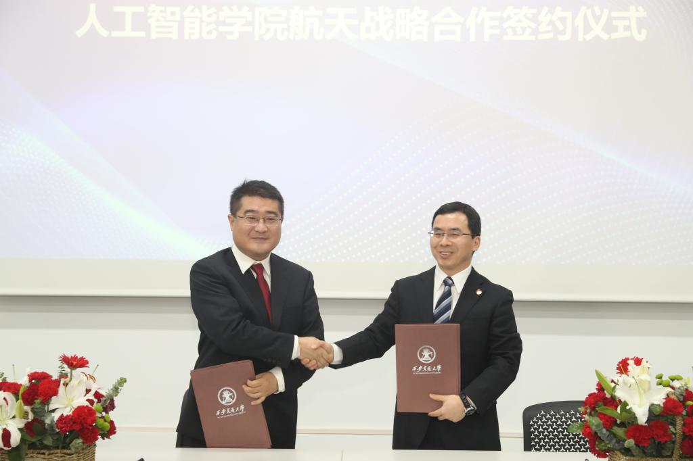
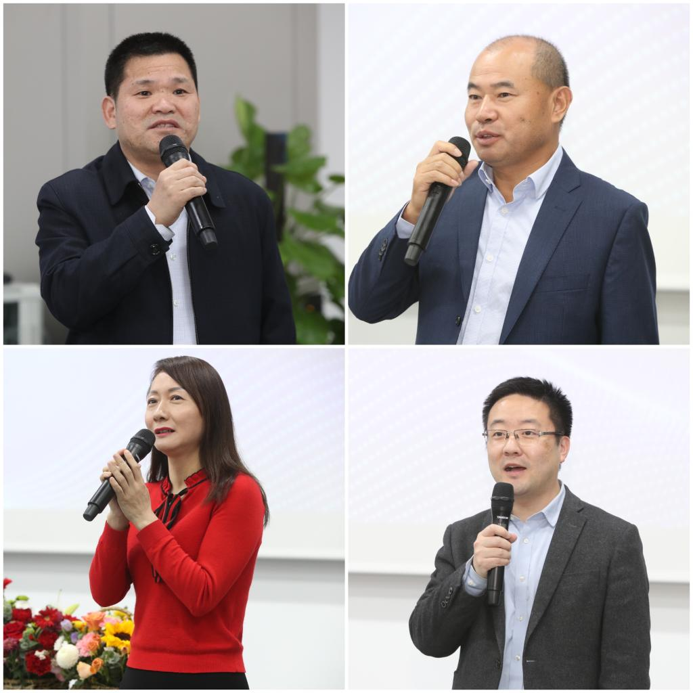
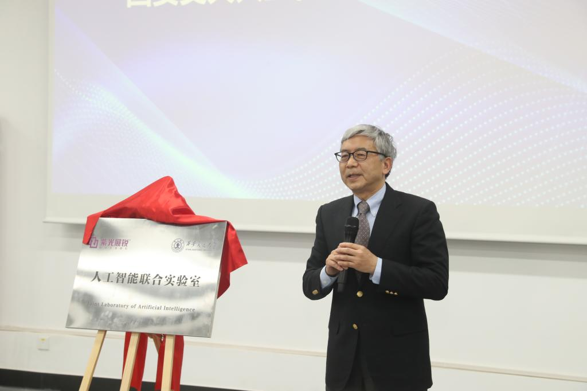
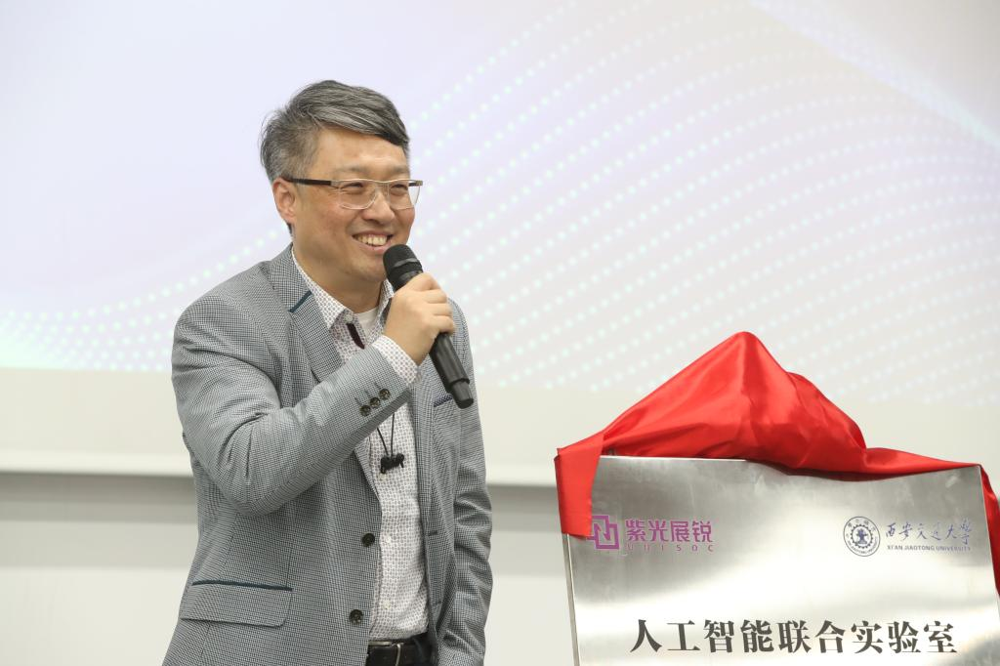
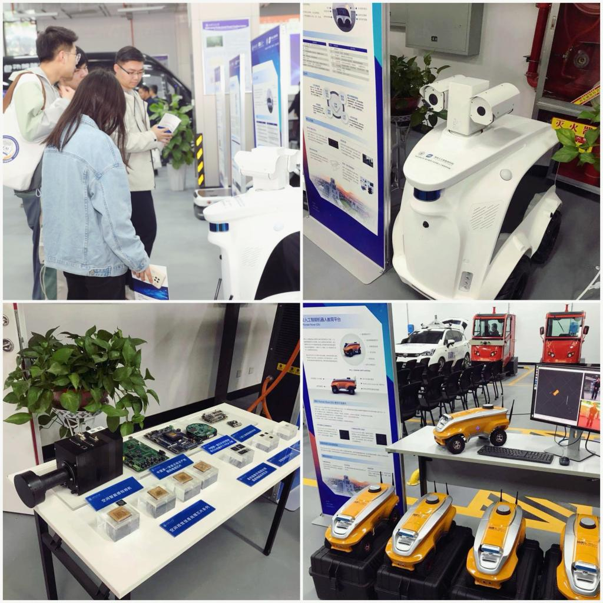

“现场的这辆无人驾驶接驳车，采用激光雷达以准确感知整个环境，并对车辆做出准确判断和定位，不同的物体以不同颜色反射，可以实现无依托定位及更好的适应环境…”4月8日下午，在西安交通大学建校125周年暨迁校65周年、人工智能与机器人研究所成立35周年之际，西安交通大学人工智能学院举办的“航天战略合作签约、紫光展锐AI联合实验室揭牌暨人工智能科研成果发布会”中，西安交通大学研究生人工智能与机器人研究所研究生詹钧翔接受了凤凰网陕西专访。
西安交通大学人工智能与机器人研究所自成立以来，长期从事以计算机视觉与模式识别为核心，围绕计算机视觉与模式识别、人工智能前沿基础理论及其在国家航天重大工程、无人驾驶智能车、视觉大数据智能化处理等领域的应用，在基础算法模型、新型计算架构及专业芯片和示范应用等方面，在国内外学术界形成重要的影响力，取得了一系列在国内外具有重要影响力的研究成果。
发布会现场，西安市科技局副局长任晖说道：“人工智能作为新一轮科技革命和产业变革的重要驱动力量，正在深刻改变世界。未来，我们也将继续大力推进与西安交通大学等院地、校地一体化融合，加强与西安交通大学人工智能学院的深入交流和合作，力争在智能视觉、自主无人智能技术等关键核心技术攻关方面取得突破；借助中国西部科技创新港平台，开发一批创新产品，申请核心发明专利，主导或参与制定人工智能技术标准规范。同时，引进并培育人工智能高层次领军人才，培养相关专业高校毕业生，共同参与企业孵化、服务、开放、共享的产业生态体系建设，全力打造要素齐全、开放协同的创新生态”。

发布会上，西安交通大学科研院常务副院长黄忠德、电信学部党委书记梁莉、人工智能学院副院长孙宏滨和杰出校友代表、西龙科技创始人王龙分别致辞。

活动现场，人工智能学院与中国空间技术研究院遥感卫星总体部进行战略合作协议签订。西安交通大学院士郑南宁教授提到，早在九十年代初期，人机所就与航天企业开始合作，实现了在空间视觉领域的一系列科研成果，赋能我国探月重大专项三期工程“嫦娥五号”月壤表采机械臂视觉系统，实现视觉引导的月壤采样和装填，解决国防重大工程中视觉芯片与系统的“卡脖子”问题。希望在未来发展中，双方能进一步加强合作交流，共同打造卫星遥感新总体核心能力。

随着西安交大-紫光展锐AI联合实验室成功揭牌，西安交通大学也将正式为企业与专家学者搭建了一个平台，共同聚焦关系国家战略全局的人工智能领域，潜心开展更多前沿研究并不断取得新突破。“西安交通大学的人机所是国内最早从事人工智能研究的专职科研机构，其前瞻性、贡献度、引领作用都是在国内外极具影响力的。紫光展锐与交通大学人工智能与机器人研究所合作是必然也是最佳的选择，下一步，我们将致力于人工智能方面展开全面合作，使基础研究不断深入、科研成果落地推广，助力民族工业的再次腾飞和崛起”。紫光展锐CEO楚庆在接受凤凰网陕西专访时说。

随后，5G智能巡检机器人、人工智能机器人教育平台、室外无人巡检车、3D人脸智能锁…一系列人工智能最新科研成果被集中展示时，引发了现场关注。人工智能学院常务副院长辛景民教授介绍，多年来，人工智能学院承担国家级科技项目、省部级科技项目、企业委托项目200余项；先后荣获国家自然科学奖二等奖1项，国家技术发明奖二等奖1项，国家科技进步奖二等奖2项。
下一步，西安交通大学人工智能学院也将进一步紧盯国家重大需求，主动作为，以西迁精神为指引，秉持开放包容合作的态度，为国家富强、民族复兴作出交大人应有的贡献。
